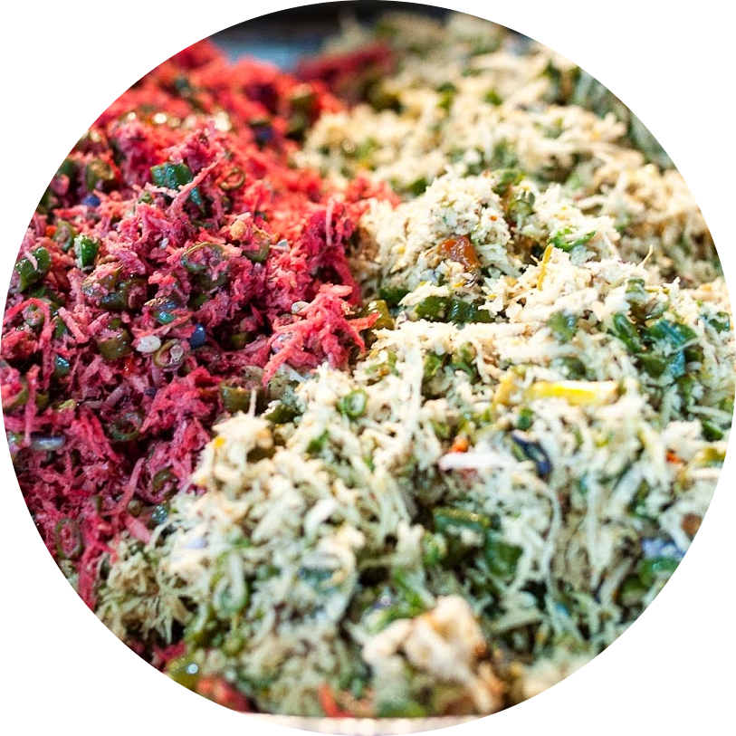
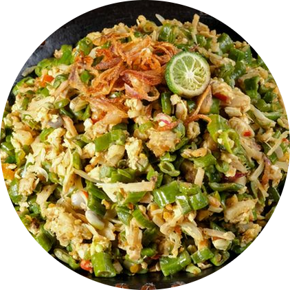

Lawar
Lawar adalah hidangan tradisional dari Bali, Indonesia. Hidangan ini terbuat dari daging yang dihaluskan, dicampur dengan darah babi atau ayam, dan diberi bumbu-bumbu khas Bali, seperti terasi, kemiri, kunyit, dan cabai. Lawar biasanya disajikan dengan nasi dan sering dianggap sebagai hidangan utama dalam upacara adat atau perayaan di Bali.

Bahan-Bahan
1 ekor ayam, direbus hingga empuk, potong-potong
200 gram kacang panjang, dipotong-potong
100 gram kelapa parut, sangrai hingga kecokelatan
3 siung bawang putih, cincang halus
2 butir cabai merah, iris tipis
Garam secukupnya
Bumbu kaldu ayam secukupnya
Cara Membuat
1. Campur kelapa parut yang telah disangrai, bawang putih cincang, cabai merah iris tipis, kacang panjang, dan ayam yang sudah direbus dalam sebuah mangkuk besar. Pastikan semua bahan tercampur dengan baik;
2. Tambahkan bumbu kaldu ayam secukupnya sesuai dengan selera Anda;
3. Aduk semua bahan hingga merata dan bumbu meresap ke dalam ayam dan sayuran;
4. Hidangkan Lawar Ayam dengan taburan bawang goreng sebagai hiasan.
